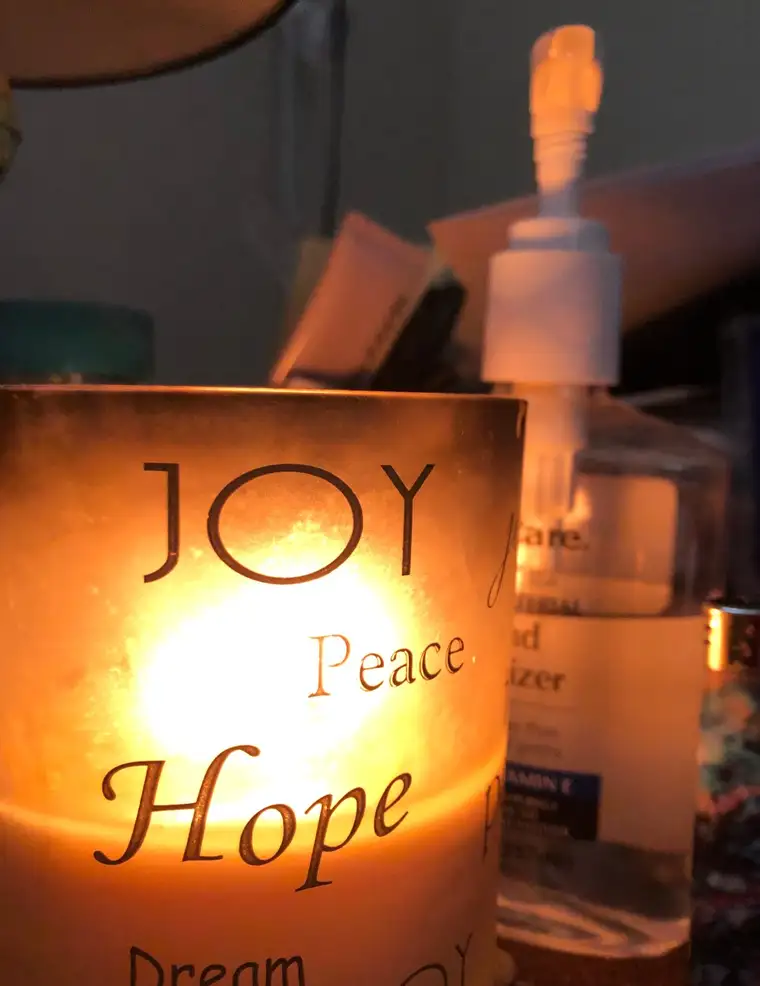
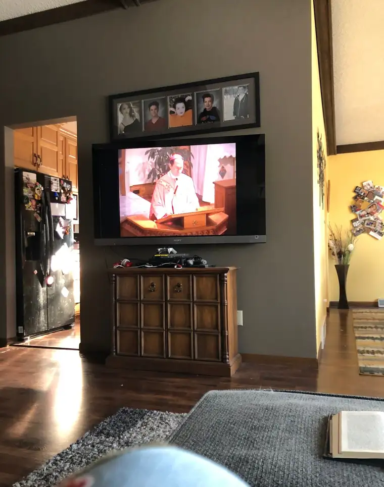
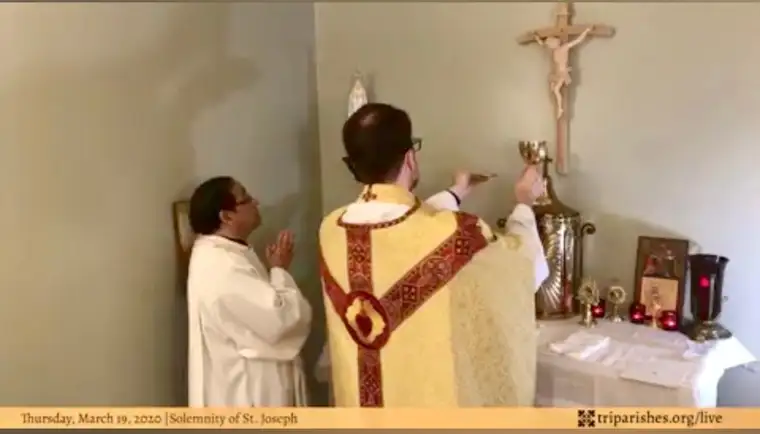
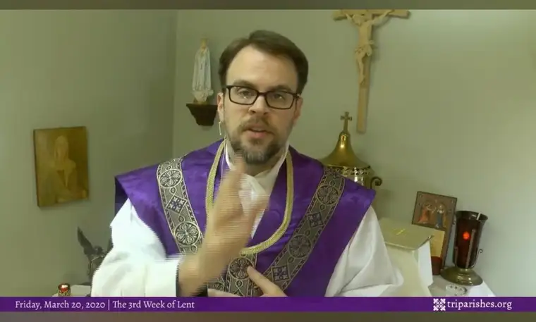
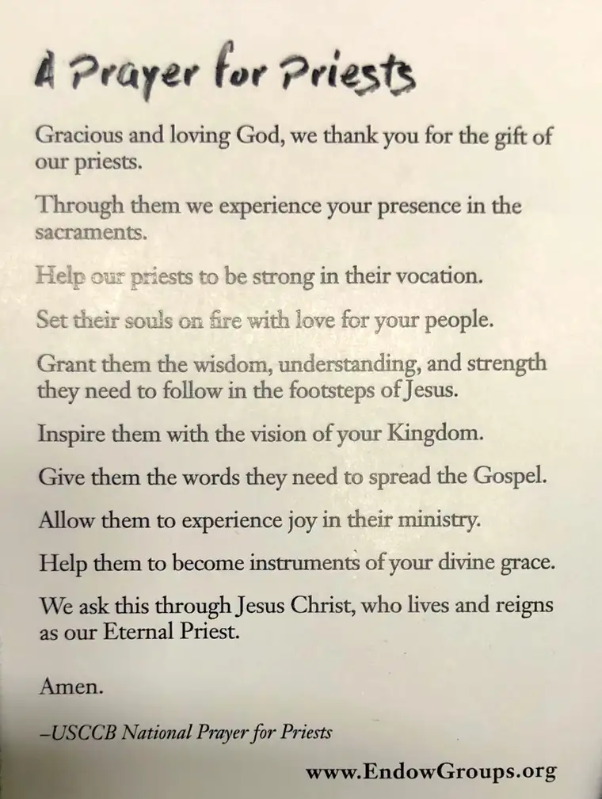

My oh my, has it been a week!
I can’t help but recall the “Serenity Prayer” that I learned many years ago, and still repeat often, asking the Lord to grant us the serenity to “accept the things we cannot change” and “courage to change the things we can.”
We have learned quickly this past week that there is much we cannot control, but conversely, there is much we can. This week, like many, I have shed quiet tears. I have awakened with the vague, awful feeling that something big and engulfing has happened, only to realize it’s true. I have wept for my children and their futures.
But in the midst of it all, I have also discovered the deep consolation of knowing that the Lord lives in our hearts. I have always felt and known that to varying degrees, but now, it is a palpable reality. Related to that, along with the growing list of heroes I have been compiling — from medical personnel to grocery store employees — I am adding priests and pastors. As a Catholic, I am especially endeared right now to those priests who, despite an inability to administer the sacraments often in these times or as they normally would, have stepped up to the plate and done everything possible to bring Jesus to us in new ways. Thank you, to all of you holy men of God!
In this new way of praying, I have found myself lighting candles more than ever. To me, a lit candle gives me the sense that God is truly with me. Something about the flicker of the candle says “life and light.” I even ordered a box of religious (saint) candles to keep up with this necessity.

It was an absolute joy this week to recite, on Wednesday, the Luminous Mysteries with Catholics and other Christians all over the world — with the Pope on EWTN, and with Jeff Cavins over at the Ascension Press Facebook livestream (the Rosary will be offered at the Ascension page for two weeks, perhaps, longer, daily at 3 p.m. CST). Also, tonight, I’ll be inviting my family to pray the Rosary with many others through this livestream effort. And this morning at 9 a.m., our family gathered for Mass for the first time in our living room, with our own Bishop John Folda.

Early in the week, I also stumbled upon a priest in Baton Rouge, Fr. Chris Decker, who has been offering morning Mass and night prayer from his virtual chapel (which all can access here weekday mornings at 8:30 a.m. CST, and evenings at 9 p.m. CST). As a priest who has been living the New Evangelization for years now, he said that he has been “preparing for this my whole life,” this chance to bring Mass and prayer to his people through digital means in a time when there is no other way to receive the sacraments. You can also find Fr. Chris on Twitter @digitalcatholic.

I am so grateful to Fr. Chris, a priest I have never met but am coming to know through his prayers and chats. Though I have since discovered online Masses that are being streamed online everywhere around the world at Mass-online.org, there has been something especially calming about Fr. Chris’s offerings, which take place in a little chapel, and therefore remind me of what he calls the “little monasteries” of our homes right now. The intimate space is calming, and the messages he shares as well. During night prayer, he checks in with his people, asking how their day has been going. Through Periscope, he interacts with them, answers questions and offers to pray for their needs. It’s quite beautiful!

On Thursday, before and after evening prayer, his messages seemed worth holding onto, so I went back to transcribe some of them for you.
Fr. Chris said, firstly, that he was feeling deeply the weight of what we are all carrying right now. “You are all hungry, you are all thirsty, for that which only the Lord can give you, and I have felt that.”
He said that in his prayers, he asks God, whenever he is offering the Mass, for the graces necessary for him to be as holy as he should be, and to offer those graces, in full, to his flock. Like any father who has something to offer — money for instance — he would not keep this for himself, but give it to his family so they can have what they need. “The priest is not offering a good or service,” he said, affirming that the priest’s “ONE JOB is to offer sacrifice on behalf of his people,” keeping nothing for himself, just as we find in the Old Testament, in the sacrifice of the lamb. “My vocation is nothing but gift,” he said. “It’s a gift that’s given to me, and a gift I freely share with you, so as I offer the Mass, that fatherly gift, I offer it back to you…that’s really all I have to give.”
Is that not beautiful? These truly seem to be the sentiments of one who is close to God and trying to do his best to bring that to us.
In Day 4 of what Fr. Chris said “feels like the Babylonian captivity,” he then answered a question from someone in the virtual audience about whether confessions could also happen virtually — this is a question I’ve also had. Fr. Chris said, no, this is not possible, because of the incarnational nature of sacraments, which involve “a live, person to person experience.” “Whenever the priest is confecting the sacrament…it’s in the person of Jesus Christ, who is incarnational” through the priest, he explained. He had heard, however, that Reconciliation could be possible in a situation in which, for example, the priest and penitent are on the phone with each other and in the same space, though keeping the necessary 6 or 10 feet distance required in these times. But never over the phone in different spaces.
At this point, Fr. Chris became serious, expressing that he felt a desire to allay our fears. “If (God) brought us into being, it is His desire that we stay in being,” he began. “God does not will the death of a sinner…and if all you can do right now is voice your repentance in your heart, he’s going to hear it.”
To back this up, he read from Matthew 10:26-33: “Therefore, do not be afraid of them. Nothing is concealed that will not be revealed, nor secret that will not be known. What I say to you in the darkness, speak in the light; what you hear whispered, proclaim from the housetops. And do not be afraid of those who kill the body but cannot kill the soul; rather, be afraid of the one who can destroy both soul and body in Gehenna. Are not two sparrows sold for a small coin? Yet not one of them falls to the ground without your Father’s knowledge. Even all the hairs of your head are counted. So do not be afraid; you are worth more than many sparrows. Everyone who acknowledges me before others I will acknowledge before my heavenly Father. But whoever denies me before others, I will deny before my heavenly Father.”
At the end of his session, Fr. Chris repeated this whole thing about not being fearful. “The Lord wishes to raise us up…he wants to lift up our heads so we stand aright,” he said. “We continue to ask the Lord to lift us up, hold us up, and ask Our Lady to tuck us in, and get us up in the morning.”
What a sweet thought.
We also prayed this prayer, for a time such as this. I would highly recommend it: https://triparishes.org/prayer-in-time-of-plague-pestilence
As you move into the week ahead, I hope some of these words of consolation will reach your heart as they did mine, and that you will hold them, and our precious faith and our Lord, ever near. God did not cause Covid-19. God will stay with us through this crisis, and lead us closer into his Sacred Heart through our sufferings.
God bless and keep you! Below, I am posting a Prayer for Priests that my Endow group has been saying daily. I hope you will join us.
Q4U: What new things has God revealed to you in this week of deprivation?
